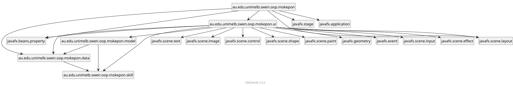
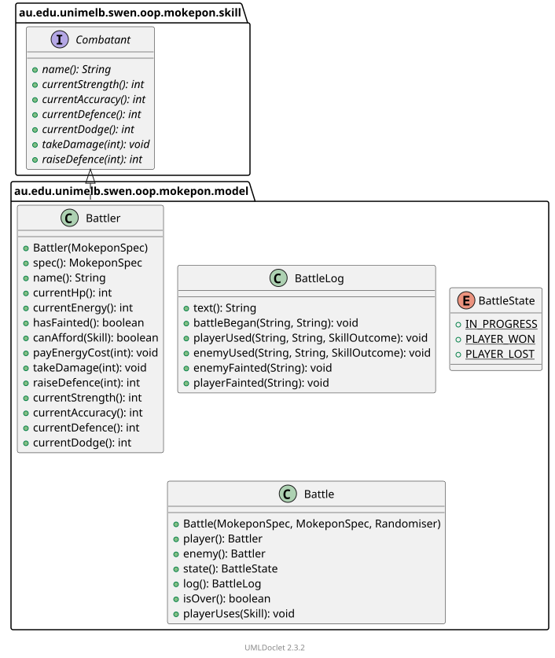
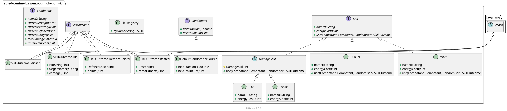
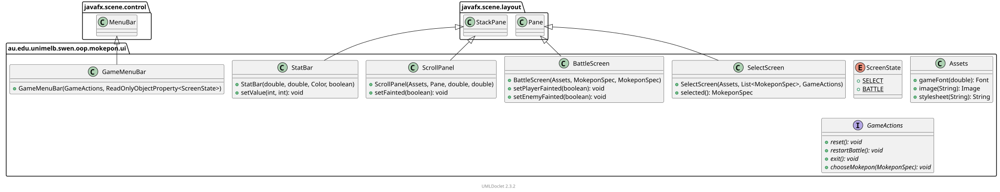
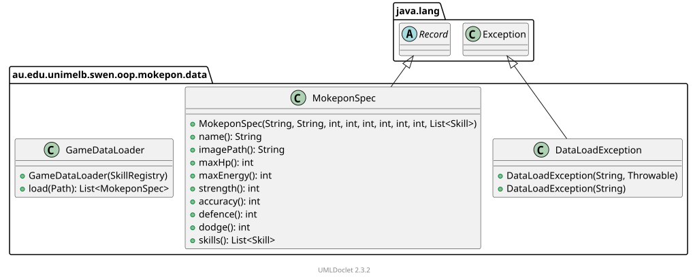
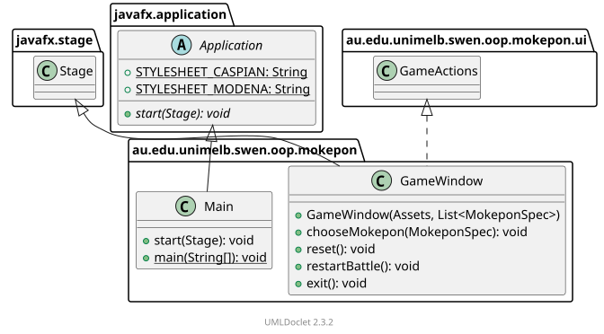

Reverse-engineered directly from src/main/java by running the
umlClassDiagram Gradle task against
talsma-ict/umldoclet,
a javadoc doclet that renders PlantUML diagrams from real compiled types —
nothing here was hand-drawn.
Every package the game touches, including the JavaFX modules it depends on.
ui
is the hub — it's the only package that talks to JavaFX directly, keeping
model and
skill free of any UI toolkit dependency.

Each plate shows a package's own types plus the neighbouring types they directly reference — fields, return types, and supertypes — the same scoping UMLDoclet uses for its generated javadoc site.




mokepon.game file into MokeponSpec records, throwing DataLoadException on malformed input.